D-B116 (PI, 2026-11-27 13:34: "we should at least propose to re-draw plate boundaries"). Catalog v6.1. Built Fri Nov 27 19:19:27 PST 2026; code ece2a586 on branch analysis/plate-boundaries-v2 (workflow/11_paper_plan/pbv2_*.py). Status: adopted for the paper analyses (D-B117) with two changes, below; sections 1-9 document the D-B116 proposal. The segment rule is unchanged; PB_AXES now defaults to v2 (adopted); v2proposal, gmrt (axes v1, D-B113) and pb2002 stay selectable.
Files: adopted_boundaries_v2.geojson (this folder; the proposal record stays in proposed_boundaries_v1.geojson), data/paper_plan/plate_boundaries_v2/plate_axes_v2_adopted.csv (PB_AXES=v2), corners_adopted.csv, breaks_adopted.csv, segment_change_v1_v2adopted.csv, segment_totals_adopted.csv. The proposal axes are plate_axes_v2_proposal.csv (PB_AXES=v2proposal).
Segment changes, v1 (gmrt, D-B113) to v2 adopted, v6.1 tier A-C earthquakes, same segment rule: 727 of 135,433 events change segment (the proposal moved 2,345). The triple junction and the MTJ, NAPA and GS groups are unchanged; most moves come from the Mendocino trace (8-9 km north of PB2002 and of axes v1), which now takes events near the GR-MFZ corner and from the Gorda plate edge.
| from_v1_gmrt | to_v2_adopted | events |
|---|---|---|
| GR | MFZ | 344 |
| GP | MFZ | 186 |
| JP | JR | 74 |
| GP | GR | 67 |
| JR | JP | 35 |
| MFZ | GR | 10 |
| MFZ | GP | 5 |
| EXP | EXR | 4 |
| GR | GP | 1 |
| MFZ | NAPA | 1 |
Totals per segment that differ between the trace sets:
| segment | pb2002 | gmrt | v2proposal | v2 | v2_minus_gmrt |
|---|---|---|---|---|---|
| JR | 1225 | 1453 | 907 | 1492 | 39 |
| EXR | 195 | 194 | 195 | 198 | 4 |
| GR | 3081 | 4128 | 3860 | 3860 | -268 |
| MFZ | 2742 | 2739 | 3221 | 3253 | 514 |
| SOV | 85 | 86 | 88 | 86 | 0 |
| JP | 583 | 355 | 901 | 316 | -39 |
| GP | 6001 | 4957 | 4672 | 4710 | -247 |
| EXP | 877 | 877 | 874 | 873 | -4 |
| MTJ | 10474 | 10474 | 10390 | 10474 | 0 |
| GS | 11946 | 11946 | 11391 | 11946 | 0 |
| OC | 7498 | 7498 | 7464 | 7498 | 0 |
| NAPA | 4304 | 4304 | 5048 | 4305 | 1 |
Corners and triple junction (adopted)
| name | lon | lat | sig_major_km | sig_minor_km | note |
|---|---|---|---|---|---|
| GR-MFZ corner (RTI) | -127.4509 | 40.5015 | 4.3 | 2.6 | |
| GR-Blanco corner (RTI) | -126.5996 | 42.9881 | 1.8 | 1.3 | |
| Blanco-JdF corner (RTI, Cleft) | -130.4259 | 44.5269 | 1.6 | 0.6 | |
| Axial node | -129.9893 | 45.9451 | Axial seismicity centroid (A4) | ||
| Mendocino triple junction (PB2002, kept) | -124.7420 | 40.3130 | PB2002 point (D-B117); Mendocino joined by the A7 connector | ||
| Mendocino triple junction, D-B116 proposal (not adopted) | -124.7656 | 40.3489 | 1.0 | 0.0 | trench position (PB2002) taken as exact; its uncertainty is not included |
JdF breaks (adopted)
| break_k | kind | origin | lon | lat | offset_km |
|---|---|---|---|---|---|
| 0 | step-over | BIC fit (bathymetry) | -129.765 | 46.269 | +3.9 |
| 1 | step-over | BIC fit (bathymetry) | -129.512 | 46.594 | +5.7 |
| 2 | step-over | BIC fit (bathymetry) | -129.191 | 47.091 | -4.8 |
| 3 | step-over | A6 junction (Northern Symmetric - Endeavour) | -129.165 | 47.566 | -18.2 |
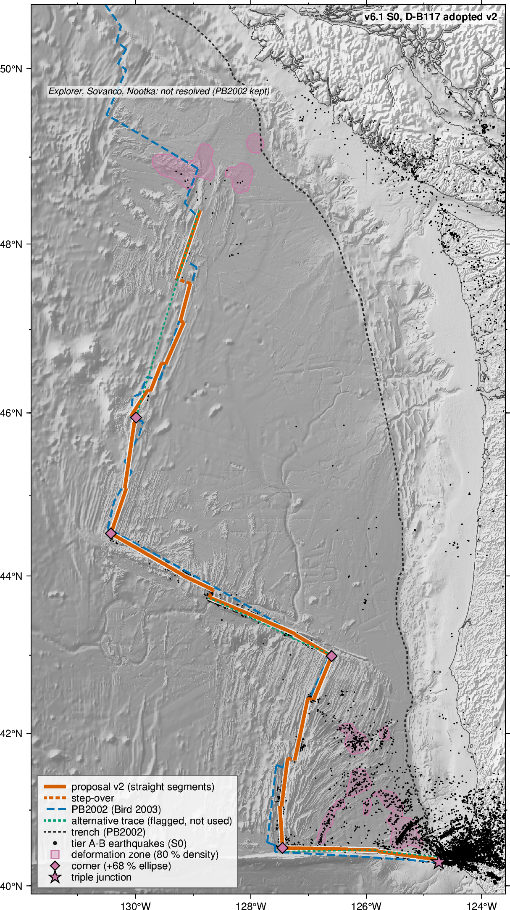
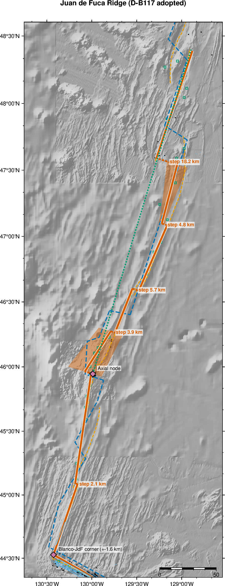
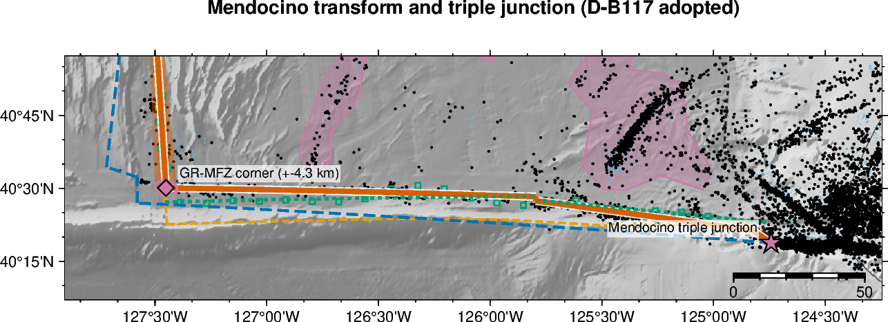
Deliverables: proposed_boundaries_v1.geojson (this folder), data/paper_plan/plate_boundaries_v2/ in git (offsets_summary.csv, segments.csv, breaks.csv, corners.csv, bias_tests.csv, verdict.csv, model_comparison.csv, plate_axes_v2.csv, RULES.md, manuscript_bullets.md).
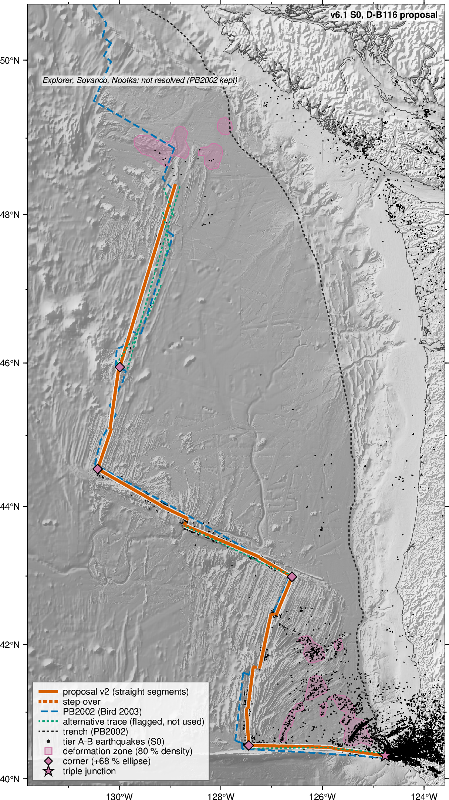
Offsets are measured on the seismicity axis (per-bin peaks) minus the PB2002 trace in the same bin; the section offset O is the median over bins with a 95 % day-block bootstrap interval. Bias terms: B_pair = largest across-strike shift (ours minus theirs, common events) against OBS-based catalogs; B_ver = spread of the axis over catalogs v4.1, v5.1, v6.0, v6.1 (same events); B_geo = largest change when only good station geometry (gap ≤ 180 deg, nearest station ≤ 15 km) or one Cascadia Initiative year is used. Verdict rule (pre-registered): not location bias if |O| ≥ 2 B and an independent catalog's own axis is offset the same way.
| section | O_pb2002 | O_lo | O_hi | O_bathy | B_pair | B_ver | B_geo | B | independent_own_offsets | verdict |
|---|---|---|---|---|---|---|---|---|---|---|
| MFZ | +8.6 | +8.0 | +8.8 | -0.47 | 2.23 | 2.50 | 0.50 | 2.50 | Niksejel 2026: +10.2 km (17 bins); Liu 2026 (2024 seq.): +4.1 km (7 bins); Liu 2026 (2016 seq.): +3.8 km (6 bins) | offset is not location bias |
| BL | -6.0 | -6.9 | -5.9 | +2.02 | 0.61 | 0.40 | 1.15 | 1.15 | Zhou 2024: -4.6 km (67 bins); Niksejel 2026: -5.4 km (68 bins); Lange 2026 abs: -4.8 km (69 bins); Lange 2026 rel: -4.3 km (67 bins) | offset is not location bias |
| GR | +13.8 | +9.5 | +14.3 | +0.09 | 0.10 | 0.05 | 0.10 | partly | ||
| JRS | +6.8 | not tested (no seismicity axis) | ||||||||
| JRN | +6.8 | not tested (no seismicity axis) |
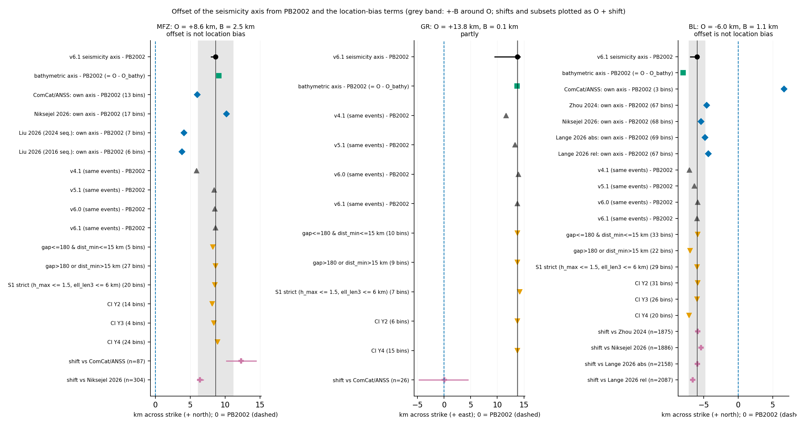
| section | label | n_events_window | n_pairs | du_median_km | du_lo | du_hi | dh_median_km | their_herr_median_km | own_n_bins | own_O_pb2002 | own_minus_ours |
|---|---|---|---|---|---|---|---|---|---|---|---|
| MFZ | ComCat/ANSS | 357 | 87 | +3.67 | +1.59 | +5.83 | 20.73 | 5.0 | 13 | +6.0 | -0.3 |
| MFZ | Niksejel 2026 | 490 | 304 | -2.23 | -2.60 | -1.79 | 5.14 | 17 | +10.2 | +2.7 | |
| MFZ | Gong 2025 (land, MTJ) | 42 | 1 | +22.2 | +17.9 | ||||||
| MFZ | Liu 2026 (2024 seq.) | 1263 | 7 | +4.1 | -1.6 | ||||||
| MFZ | Liu 2026 (2016 seq.) | 144 | 6 | +3.8 | -7.8 | ||||||
| BL | ComCat/ANSS | 172 | 3 | +6.6 | |||||||
| BL | Zhou 2024 | 12582 | 1875 | +0.12 | +0.06 | +0.16 | 1.03 | 67 | -4.6 | -0.1 | |
| BL | Niksejel 2026 | 22463 | 1886 | +0.56 | +0.52 | +0.60 | 1.26 | 68 | -5.4 | -0.3 | |
| BL | Lange 2026 abs | 11262 | 2158 | +0.03 | -0.01 | +0.08 | 1.71 | 69 | -4.8 | +0.5 | |
| BL | Lange 2026 rel | 10703 | 2087 | -0.61 | -0.73 | -0.51 | 2.01 | 67 | -4.3 | +1.0 | |
| GR | ComCat/ANSS | 156 | 26 | -13.74 | -18.46 | -9.29 | 18.58 | 8.2 | 0 | ||
| GR | Niksejel 2026 | 30 | 1 | +0.0 | |||||||
| GR | Liu 2026 (2024 seq.) | 3 | |||||||||
| GR | Lange 2026 abs | 10 | 0 | ||||||||
| GR | Lange 2026 rel | 1 |
du = across-strike shift of common events, ours minus theirs (|dt| ≤ 3 s, ≤ 50 km; Lange by the pairs of b4_lit_paired.py); own_O_pb2002 = their seismicity axis minus PB2002 (same bins and rule).
| section | test | label | D_km | n_bins | O_pb2002 | n_events |
|---|---|---|---|---|---|---|
| MFZ | version | v4.1 | -2.50 | 25 | +5.9 | |
| MFZ | version | v5.1 | -0.10 | 29 | +8.4 | |
| MFZ | version | v6.0 | +0.00 | 29 | +8.5 | |
| MFZ | version | v6.1 | +0.00 | 29 | +8.6 | |
| MFZ | geometry | gap<=180 & dist_min<=15 km | -0.40 | 5 | 131 | |
| MFZ | geometry | gap>180 or dist_min>15 km | +0.00 | 27 | 882 | |
| MFZ | selection | S1 strict (h_max <= 1.5, ell_len3 <= 6 km) | -0.10 | 20 | 487 | |
| MFZ | CI year | CI Y2 | -0.50 | 14 | 349 | |
| MFZ | CI year | CI Y3 | -0.25 | 4 | 128 | |
| MFZ | CI year | CI Y4 | +0.30 | 24 | 536 | |
| BL | version | v4.1 | -0.40 | 39 | -7.1 | |
| BL | version | v5.1 | -0.10 | 39 | -6.4 | |
| BL | version | v6.0 | +0.00 | 39 | -5.9 | |
| BL | version | v6.1 | +0.00 | 39 | -6.0 | |
| BL | geometry | gap<=180 & dist_min<=15 km | +0.10 | 33 | 2986 | |
| BL | geometry | gap>180 or dist_min>15 km | -1.00 | 22 | 731 | |
| BL | selection | S1 strict (h_max <= 1.5, ell_len3 <= 6 km) | +0.00 | 29 | 2268 | |
| BL | CI year | CI Y2 | +0.10 | 31 | 2065 | |
| BL | CI year | CI Y3 | +0.00 | 26 | 1055 | |
| BL | CI year | CI Y4 | -1.15 | 20 | 594 | |
| GR | version | v4.1 | -0.10 | 23 | +11.6 | |
| GR | version | v5.1 | -0.10 | 24 | +13.3 | |
| GR | version | v6.0 | +0.00 | 25 | +14.0 | |
| GR | version | v6.1 | +0.00 | 26 | +13.8 | |
| GR | geometry | gap<=180 & dist_min<=15 km | -0.05 | 10 | 387 | |
| GR | geometry | gap>180 or dist_min>15 km | +0.00 | 9 | 380 | |
| GR | selection | S1 strict (h_max <= 1.5, ell_len3 <= 6 km) | +0.40 | 7 | 204 | |
| GR | CI year | CI Y2 | +0.00 | 6 | 183 | |
| GR | CI year | CI Y3 | +0.20 | 2 | 53 | |
| GR | CI year | CI Y4 | +0.00 | 15 | 531 |
D = median over common bins of (subset axis minus all-event axis).
| section | var | lo | hi | median_residual_km | n |
|---|---|---|---|---|---|
| BL | dist_min | 0 | 5 | +0.23 | 940 |
| BL | dist_min | 5 | 10 | +0.23 | 1900 |
| BL | dist_min | 10 | 20 | -0.12 | 465 |
| BL | dist_min | 20 | 40 | -1.63 | 241 |
| BL | dist_min | 40 | 200 | -2.16 | 161 |
| BL | gap | 0 | 90 | +0.06 | 1946 |
| BL | gap | 90 | 135 | -0.03 | 1252 |
| BL | gap | 135 | 180 | +0.29 | 394 |
| BL | gap | 180 | 225 | -0.12 | 93 |
| BL | gap | 225 | 360 | +0.28 | 22 |
| GR | dist_min | 0 | 5 | -0.54 | 153 |
| GR | dist_min | 5 | 10 | -1.20 | 203 |
| GR | dist_min | 10 | 20 | -0.05 | 65 |
| GR | dist_min | 20 | 40 | -1.06 | 131 |
| GR | dist_min | 40 | 200 | +2.01 | 86 |
| GR | gap | 0 | 90 | +0.03 | 241 |
| GR | gap | 90 | 135 | -0.79 | 324 |
| GR | gap | 135 | 180 | -1.10 | 64 |
| MFZ | dist_min | 5 | 10 | +0.03 | 50 |
| MFZ | dist_min | 10 | 20 | -0.25 | 171 |
| MFZ | dist_min | 20 | 40 | +0.08 | 555 |
| MFZ | dist_min | 40 | 200 | +0.41 | 145 |
| MFZ | gap | 0 | 90 | +0.23 | 269 |
| MFZ | gap | 90 | 135 | -0.07 | 427 |
| MFZ | gap | 135 | 180 | +0.11 | 194 |
| MFZ | gap | 180 | 225 | -0.22 | 47 |
Events within 10 km of the line. Blanco events more than 20 km from the nearest station sit 1.7-2.1 km south of the line (n = 400): a small geometry effect, much smaller than the offset from PB2002.
| section | segment | type | data | source | length_km | n_picks | unc68_km | minus_pb2002_median_km | max_abs_from_pb2002_km | flag |
|---|---|---|---|---|---|---|---|---|---|---|
| MFZ | 0 | transform | seismicity | seismicity | 140 | 15 | 0.23 | +8.7 | 11.0 | bathymetric and seismicity axes disagree (alternative feature given) |
| MFZ | 1 | transform | seismicity | seismicity | 88 | 14 | 0.23 | +7.1 | 9.4 | bathymetric and seismicity axes disagree (alternative feature given) |
| BL | 0 | transform | seismicity (tier A-C) | seismicity | 61 | 12 | 0.79 | -1.4 | 1.5 | bathymetric and seismicity axes disagree (alternative feature given); A2: fitted to tier A-C picks (no tier A-B picks in this span) |
| BL | 1 | transform | seismicity | seismicity | 130 | 25 | 0.07 | -8.2 | 16.1 | bathymetric and seismicity axes disagree (alternative feature given) |
| BL | 2 | transform | seismicity | both | 45 | 6 | 1.20 | -5.8 | 7.2 | |
| BL | 3 | transform | seismicity | both | 117 | 8 | 0.92 | -5.5 | 6.9 | |
| GR | 0 | spreading ridge | bathymetry | bathymetry | 59 | 6 | 3.38 | +17.3 | 23.0 | seismicity too sparse: bathymetry only |
| GR | 1 | spreading ridge | bathymetry | bathymetry | 70 | 7 | 1.88 | +14.9 | 15.2 | seismicity too sparse: bathymetry only |
| GR | 2 | spreading ridge | bathymetry | bathymetry | 90 | 9 | 0.68 | +0.5 | 6.6 | seismicity too sparse: bathymetry only |
| GR | 3 | spreading ridge | bathymetry | bathymetry | 66 | 6 | 1.41 | +4.8 | 6.2 | seismicity too sparse: bathymetry only |
| JRS | 0 | spreading ridge | bathymetry | bathymetry | 65 | 6 | 0.37 | +8.1 | 10.0 | seismicity too sparse: bathymetry only |
| JRS | 1 | spreading ridge | bathymetry | bathymetry | 96 | 10 | 0.38 | -2.5 | 11.5 | seismicity too sparse: bathymetry only |
| JRN | 0 | spreading ridge | seismicity (AX-EN centroids) | seismicity | 285 | 2 | 1.06 | -16.4 | 19.2 | bathymetric and seismicity axes disagree (alternative feature given); A3: straight line through the Axial and Endeavour seismicity centroids (PI); seismicity between them too sparse for an axis |
| section | break_k | kind | origin | lon | lat | s_break | s_68 | offset_km | offset_68 | offset_95 |
|---|---|---|---|---|---|---|---|---|---|---|
| MFZ | 0 | bend | BIC fit | -125.795 | 40.465 | 140 | 125-140 | -1.6 | -1.9--0.0 | -2.3-18.1 |
| BL | 0 | bend | A2 junction | -127.240 | 43.269 | 60 | +1.1 | |||
| BL | 1 | step-over | BIC fit | -128.688 | 43.781 | 190 | 182-190 | +12.4 | 10.9-12.6 | 9.3-12.9 |
| BL | 2 | step-over | BIC fit | -129.160 | 44.001 | 235 | 235-270 | +3.1 | 2.9-8.9 | 1.2-10.3 |
| GR | 0 | step-over | BIC fit | -127.482 | 41.054 | 70 | +2.6 | |||
| GR | 1 | step-over | BIC fit | -127.301 | 41.665 | 140 | +10.6 | |||
| GR | 2 | step-over | BIC fit | -126.962 | 42.440 | 230 | +8.4 | |||
| JRS | 0 | step-over | BIC fit | -130.171 | 45.089 | 69 | -2.1 |
Blanco: the BIC itself picks K = 2 (three segments), the PI's reading; K = 3 raises BIC by 12.3, so the data do not support more step-overs at this resolution. The first step-over (Cascadia Depression) is well located (s 68 %: 182-190 km); the second lies between the Surveyor Depression and the East Blanco Depression (s 68 %: 235-270 km, 129.16 W at the best fit). MAPRIDGES maps four step-overs; at the Gorda Depression (first 60 km) tier A-B picks are missing and the tier A-C line joins the Blanco Ridge segment with a 1.1 km bend. The Blanco Ridge segment (25 bins) runs 3.8 km north of the MAPRIDGES trace at mid-segment (flagged; both drawn). The fault surfaces v1 (v6.1) give the individual strands (GeoJSON features "transform strand").
| name | lon | lat | sig_major_km | sig_minor_km | az_major_deg | dist_to_PB2002_TJ_km | note |
|---|---|---|---|---|---|---|---|
| GR-MFZ corner (RTI) | -127.4509 | 40.5015 | 4.3 | 2.6 | 98 | ||
| GR-Blanco corner (RTI) | -126.5996 | 42.9881 | 1.8 | 1.3 | 131 | ||
| Blanco-JdF corner (RTI, Cleft) | -130.4259 | 44.5269 | 1.6 | 0.6 | 19 | ||
| Axial node | -129.9893 | 45.9451 | Axial seismicity centroid (A4) | ||||
| Mendocino triple junction | -124.7656 | 40.3489 | 1.0 | 0.0 | 153 | 4.5 | trench position (PB2002) taken as exact; its uncertainty is not included |
| section | data | K | n | chi2 | bic | chosen_bic | drawn |
|---|---|---|---|---|---|---|---|
| MFZ | seismicity | 0 | 29 | 37.4 | 44.1 | False | False |
| MFZ | seismicity | 1 | 29 | 15.5 | 35.7 | True | True |
| MFZ | seismicity | 2 | 29 | 14.2 | 47.9 | False | False |
| MFZ | seismicity | 3 | 29 | 13.5 | 60.7 | False | False |
| MFZ | seismicity | 4 | 29 | 13.4 | 74.0 | False | False |
| BL | seismicity | 0 | 39 | 477.7 | 485.0 | False | False |
| BL | seismicity | 1 | 39 | 35.7 | 57.6 | False | False |
| BL | seismicity | 2 | 39 | 18.8 | 55.5 | True | True |
| BL | seismicity | 3 | 39 | 16.5 | 67.8 | False | False |
| BL | seismicity | 4 | 39 | 14.5 | 80.4 | False | False |
| BL | seismicity | 5 | 39 | 14.8 | 95.4 | False | False |
| GR | bathymetry | 0 | 28 | 1131.3 | 1138.0 | False | False |
| GR | bathymetry | 1 | 28 | 205.5 | 225.5 | False | False |
| GR | bathymetry | 2 | 28 | 77.4 | 110.8 | False | False |
| GR | bathymetry | 3 | 28 | 37.0 | 83.6 | True | True |
| GR | bathymetry | 4 | 28 | 27.2 | 87.2 | False | False |
| GR | bathymetry | 5 | 28 | 23.2 | 96.5 | False | False |
| JRS | bathymetry | 0 | 16 | 58.1 | 63.7 | False | False |
| JRS | bathymetry | 1 | 16 | 6.4 | 23.0 | True | True |
| JRS | bathymetry | 2 | 16 | 4.3 | 32.0 | False | False |
| JRS | bathymetry | 3 | 16 | 6.2 | 45.0 | False | False |
| JRN | bathymetry | 0 | 26 | 2967.3 | 2973.8 | False | False |
| JRN | bathymetry | 1 | 26 | 547.6 | 567.2 | False | False |
| JRN | bathymetry | 2 | 26 | 394.0 | 426.6 | False | False |
| JRN | bathymetry | 3 | 26 | 307.2 | 352.8 | False | False |
| JRN | bathymetry | 4 | 26 | 290.7 | 349.4 | False | False |
| JRN | bathymetry | 5 | 26 | 272.0 | 343.7 | True | False |
| name | region | selection | confidence | level | n_input | area_km2 | n_events |
|---|---|---|---|---|---|---|---|
| Gorda plate interior deformation zone 1 | GP | S0 | medium | 0.0462 | 1604 | 777 | 76 |
| Gorda plate interior deformation zone 2 | GP | S0 | medium | 0.0462 | 1604 | 2635 | 1012 |
| Gorda plate interior deformation zone 3 | GP | S0 | medium | 0.0462 | 1604 | 204 | 21 |
| Gorda plate interior deformation zone 4 | GP | S0 | medium | 0.0462 | 1604 | 986 | 87 |
| Gorda plate interior deformation zone 5 | GP | S0 | medium | 0.0462 | 1604 | 1098 | 147 |
| Gorda plate interior deformation zone 6 | GP | S0 | medium | 0.0462 | 1604 | 204 | 25 |
| Explorer plate edge deformation zone 1 | EXP | S2 | low (tier A-C; S0 has 15 events here) | 0.014 | 209 | 888 | 50 |
| Explorer plate edge deformation zone 2 | EXP | S2 | low (tier A-C; S0 has 15 events here) | 0.014 | 209 | 2432 | 106 |
| Explorer plate edge deformation zone 3 | EXP | S2 | low (tier A-C; S0 has 15 events here) | 0.014 | 209 | 402 | 23 |
| section | name | span | data | n_bins_S0 | seis_minus_pb2002_km | ci95_lo | ci95_hi | seis_minus_bathy_km | proposal_minus_pb2002_median_km | proposal_minus_pb2002_p10_km | proposal_minus_pb2002_p90_km | sign | verdict |
|---|---|---|---|---|---|---|---|---|---|---|---|---|---|
| MFZ | Mendocino transform | section | seismicity | 29 | +8.6 | +8.0 | +8.8 | -0.47 | +8.1 | +6.3 | +10.3 | + north | offset is not location bias |
| MFZ | Mendocino transform | segment 0 | seismicity | 15 | +9.4 | +8.9 | +9.6 | +3.21 | +8.7 | +6.8 | +10.6 | + north | |
| MFZ | Mendocino transform | segment 1 | seismicity | 14 | +7.3 | +7.1 | +7.7 | -1.26 | +7.2 | +5.4 | +9.0 | + north | |
| BL | Blanco transform | section | seismicity | 39 | -6.0 | -6.9 | -5.9 | +2.02 | -5.5 | -11.9 | -1.4 | + north | offset is not location bias |
| BL | Blanco transform | segment 0 | seismicity | 0 | -1.4 | -1.5 | -1.4 | + north | |||||
| BL | Blanco transform | segment 1 | seismicity | 25 | -8.0 | -8.4 | -7.7 | +2.64 | -8.2 | -14.6 | -2.0 | + north | |
| BL | Blanco transform | segment 2 | seismicity | 6 | -6.3 | -8.0 | -6.1 | -0.16 | -5.8 | -6.9 | -4.6 | + north | |
| BL | Blanco transform | segment 3 | seismicity | 8 | -4.5 | -5.2 | -4.2 | +0.44 | -5.5 | -6.6 | -4.4 | + north | |
| GR | Gorda Ridge | section | bathymetry | 26 | +13.8 | +9.5 | +14.3 | +0.09 | +5.0 | +0.2 | +17.3 | + east | partly |
| GR | Gorda Ridge | segment 0 | bathymetry | 9 | +18.8 | +15.4 | +23.3 | +0.67 | +17.3 | +12.8 | +21.9 | + east | |
| GR | Gorda Ridge | segment 1 | bathymetry | 8 | +13.7 | +11.8 | +14.4 | -0.32 | +14.9 | +2.7 | +15.2 | + east | |
| GR | Gorda Ridge | segment 2 | bathymetry | 6 | +2.5 | +1.2 | +3.6 | +1.02 | +0.5 | -0.1 | +1.0 | + east | |
| GR | Gorda Ridge | segment 3 | bathymetry | 3 | +4.8 | +3.7 | +5.9 | + east | |||||
| JRS | Juan de Fuca Ridge, Cleft to Axial | section | bathymetry | 1 | +1.8 | -9.2 | +9.0 | + east | not tested (no seismicity axis) | ||||
| JRS | Juan de Fuca Ridge, Cleft to Axial | segment 0 | bathymetry | 0 | +8.0 | +6.3 | +9.6 | + east | |||||
| JRS | Juan de Fuca Ridge, Cleft to Axial | segment 1 | bathymetry | 1 | -2.7 | -10.1 | +3.5 | + east | |||||
| JRN | Juan de Fuca Ridge, Axial to Endeavour | section | seismicity (AX-EN centroids) | 1 | -16.5 | -18.6 | +8.8 | + east | not tested (no seismicity axis) | ||||
| JRN | Juan de Fuca Ridge, Axial to Endeavour | segment 0 | seismicity (AX-EN centroids) | 1 | -16.5 | -18.6 | +8.8 | + east |
seis_minus_* only where ≥ 5 bins have tier A-B picks.
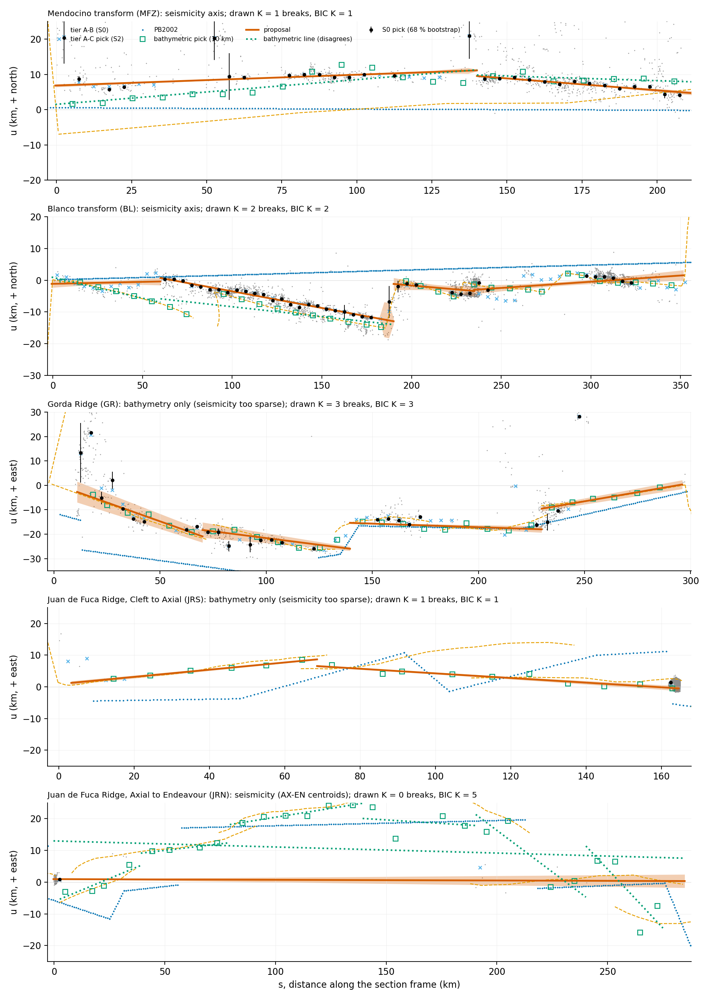
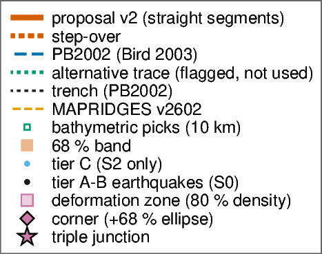
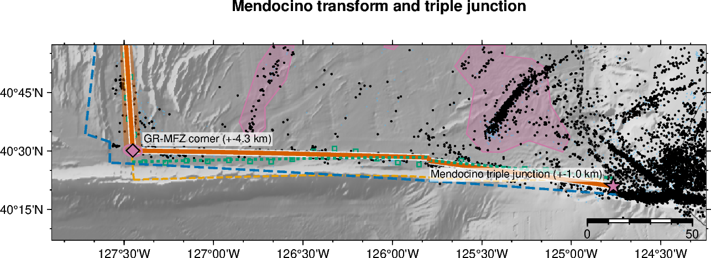
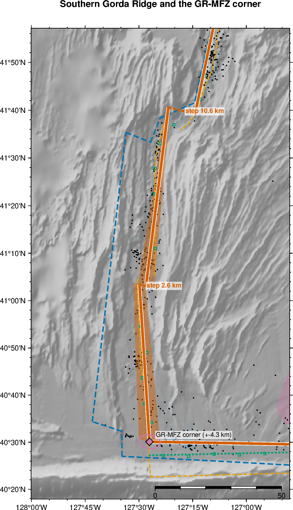
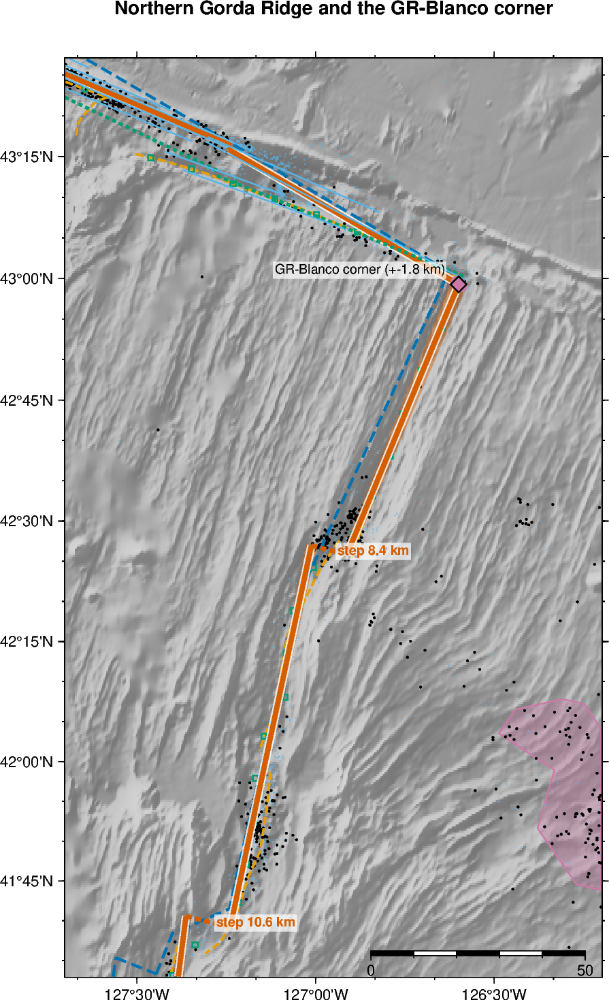
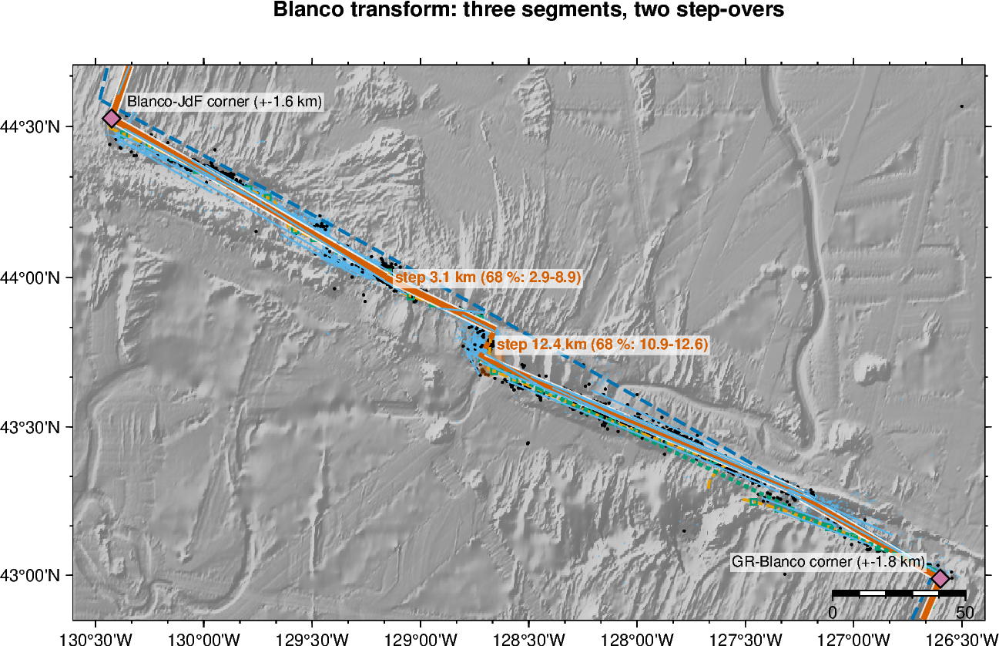
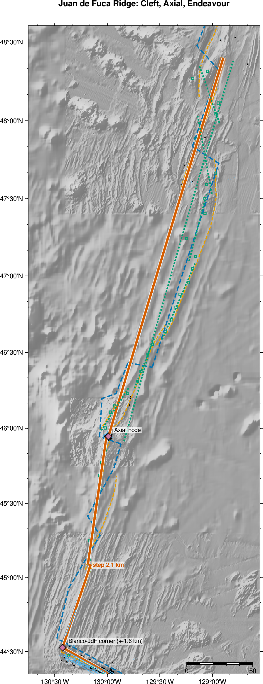
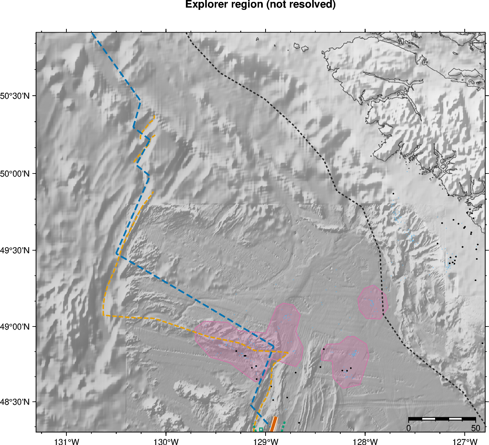
Median offset of each model from the proposal, per section (one value per 5 km bin, model point nearest the proposal, within 40 km). NNR-MORVEL56 (Argus et al. 2011) uses the Bird (2003) geometry here and matches PB2002 to 0.1 km; MORVEL (DeMets et al. 2010) itself has no boundary file. The GEM Global Active Faults database carries the same Bird (2003) segments offshore; USGS Qfaults and Watt et al. (2026) have no ridge or transform traces here (their "Blanco transform fault zone" lies east of the active trace). No digital high-resolution traces were found for the Blanco strands (Ren et al. 2023; Lange et al. 2026), Gorda, Endeavour, Sovanco or Nootka.
| section | model | n_bins | median_offset_km | median_abs_offset_km | p90_abs_offset_km | sign |
|---|---|---|---|---|---|---|
| MFZ | PB2002 (Bird 2003) | 42 | -8.1 | 8.1 | 10.2 | model minus proposal, + = north |
| MFZ | NNR-MORVEL56 (Argus et al. 2011) | 42 | -8.1 | 8.1 | 10.2 | model minus proposal, + = north |
| MFZ | Hasterok et al. 2022 | 42 | -9.2 | 10.6 | 20.1 | model minus proposal, + = north |
| MFZ | MAPRIDGES v2602 (2026) | 42 | -9.5 | 9.5 | 12.6 | model minus proposal, + = north |
| BL | PB2002 (Bird 2003) | 71 | +5.3 | 5.3 | 11.4 | model minus proposal, + = north |
| BL | NNR-MORVEL56 (Argus et al. 2011) | 71 | +5.2 | 5.2 | 11.1 | model minus proposal, + = north |
| BL | Hasterok et al. 2022 | 71 | +15.1 | 15.1 | 19.3 | model minus proposal, + = north |
| BL | MAPRIDGES v2602 (2026) | 70 | -1.5 | 1.8 | 3.7 | model minus proposal, + = north |
| GR | PB2002 (Bird 2003) | 58 | -4.8 | 4.8 | 16.5 | model minus proposal, + = east |
| GR | NNR-MORVEL56 (Argus et al. 2011) | 58 | -4.7 | 4.7 | 16.3 | model minus proposal, + = east |
| GR | Hasterok et al. 2022 | 58 | -0.1 | 0.9 | 3.1 | model minus proposal, + = east |
| GR | MAPRIDGES v2602 (2026) | 58 | -0.3 | 0.8 | 2.4 | model minus proposal, + = east |
| JRS | PB2002 (Bird 2003) | 33 | -0.4 | 6.1 | 9.5 | model minus proposal, + = east |
| JRS | NNR-MORVEL56 (Argus et al. 2011) | 33 | +0.1 | 6.2 | 9.3 | model minus proposal, + = east |
| JRS | Hasterok et al. 2022 | 33 | +3.2 | 8.3 | 9.7 | model minus proposal, + = east |
| JRS | MAPRIDGES v2602 (2026) | 33 | +0.6 | 0.8 | 2.5 | model minus proposal, + = east |
| JRN | PB2002 (Bird 2003) | 57 | +16.5 | 16.5 | 18.6 | model minus proposal, + = east |
| JRN | NNR-MORVEL56 (Argus et al. 2011) | 57 | +16.5 | 16.5 | 18.6 | model minus proposal, + = east |
| JRN | Hasterok et al. 2022 | 57 | +11.4 | 11.4 | 18.6 | model minus proposal, + = east |
| JRN | MAPRIDGES v2602 (2026) | 57 | +9.0 | 9.0 | 25.6 | model minus proposal, + = east |
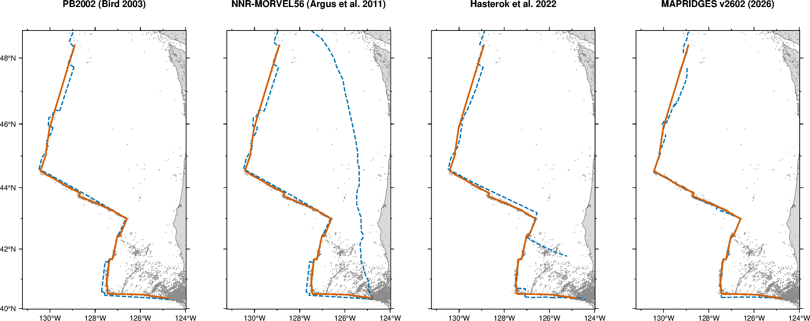
Same segment rule; v6.1 tier A-C earthquakes. 2,345 of 135,433 events change segment against axes v1 (D-B113). The triple junction moves 4.5 km, so the MTJ circle and the NAPA latitude limit move with it (the rule text is unchanged).
| segment | v1 | v2 | change |
|---|---|---|---|
| GS | 11946 | 11391 | -555 |
| JR | 1453 | 907 | -546 |
| GP | 4957 | 4672 | -285 |
| GR | 4128 | 3860 | -268 |
| MTJ | 10474 | 10390 | -84 |
| OC | 7498 | 7464 | -34 |
| EXP | 877 | 874 | -3 |
| EXR | 194 | 195 | 1 |
| SOV | 86 | 88 | 2 |
| MFZ | 2739 | 3221 | 482 |
| JP | 355 | 901 | 546 |
| NAPA | 4304 | 5048 | 744 |
| v1 (gmrt, D-B113) | v2 (D-B116) | events |
|---|---|---|
| JR | JP | 619 |
| GS | NAPA | 521 |
| GR | MFZ | 344 |
| MTJ | NAPA | 186 |
| GP | MFZ | 179 |
| GS | MTJ | 133 |
| MTJ | GS | 99 |
| JP | JR | 73 |
| GP | GR | 67 |
| GP | MTJ | 43 |
| OC | NAPA | 34 |
| MFZ | MTJ | 25 |
| MFZ | GR | 10 |
| EXP | EXR | 3 |
| MFZ | NAPA | 3 |
| input | path | md5 |
|---|---|---|
| catalog v6.1 | /wd1/mdenolle_data/catalog_v6/v6.1/cascadia_catalog_v6.1.csv | 1cd909b59cb8493bc823ad60a07fbcde |
| D-B068 merged surface | /wd1/mdenolle_data/reloc_v5/topo/topo_15s_cons_merged.bin | 11c118b72ec5cf0a270c617f0f33aa50 |
| fault surfaces v1 (v6.1) traces | /wd1/mdenolle_data/catalog_v6/v6.1_analysis/faults/fault_surfaces_v1_traces.csv | 4f415099c99b21fb3d8c60cf2a4f3f9a |
| PB2002 steps | /home/mdenolle/wt_pbv2/data/tectonics/PB2002_steps.json | a9e8b82bf23bd6c0bd213ba04b7cb255 |
| ComCat/ANSS 2010-16 | /home/mdenolle/cascadia_obs_ensemble/data/magnitude_v4/anss_2010-16.csv | cf5754baa5f2a55aeb047dd9969ab254 |
| Lange 2026 pairs (abs) | /wd1/mdenolle_data/tomo_v1/depth_literature/pairs/blanco_lange2026_abs_pairs.csv | cf70ec527af3b4f7bb78db938d8e5d53 |
| Lange 2026 pairs (rel) | /wd1/mdenolle_data/tomo_v1/depth_literature/pairs/blanco_lange2026_rel_pairs.csv | 9a1f7083827fad9c1a1a74889ad4deb9 |
Downloads (public, md5 re-checked; rows in /wd1/mdenolle_data/external_geo/PROVENANCE.csv):
| dataset | doi | licence | file | md5 |
|---|---|---|---|---|
| pbv2_nnrmorvel56 | 10.1029/2011GC003751 | none stated (academic web page) | /wd1/mdenolle_data/external_geo/pbv2_nnrmorvel56/NnrMRVL_PltBndsLatLon.zip | ffb60f68f6d13984073f94dacec1a958 |
| pbv2_morvel_data | 10.1111/j.1365-246X.2009.04491.x | none stated | /wd1/mdenolle_data/external_geo/pbv2_morvel_data/MRVL_data.txt | a2d1e8a22fcf3a91f0955a1474dc5cdc |
| pbv2_hasterok2022 | 10.1016/j.earscirev.2022.104069 (static copy 10.5281/zenodo.5093930) | GPL-3.0 (repo); CC-BY-4.0 (Zenodo static copy) | /wd1/mdenolle_data/external_geo/pbv2_hasterok2022/boundaries.gmt | 811a24a4bbd2daac22d122501b1eee36 |
| pbv2_hasterok2022 | 10.1016/j.earscirev.2022.104069 (static copy 10.5281/zenodo.5093930) | GPL-3.0 (repo); CC-BY-4.0 (Zenodo static copy) | /wd1/mdenolle_data/external_geo/pbv2_hasterok2022/plates.gmt | 8df463b0859e758c1ad8d97eba0cf65d |
| pbv2_hasterok2022 | 10.1016/j.earscirev.2022.104069 (static copy 10.5281/zenodo.5093930) | GPL-3.0 (repo); CC-BY-4.0 (Zenodo static copy) | /wd1/mdenolle_data/external_geo/pbv2_hasterok2022/plate_boundaries.shp | ff2bb805ed232d68d81227f4867227b8 |
| pbv2_hasterok2022 | 10.1016/j.earscirev.2022.104069 (static copy 10.5281/zenodo.5093930) | GPL-3.0 (repo); CC-BY-4.0 (Zenodo static copy) | /wd1/mdenolle_data/external_geo/pbv2_hasterok2022/plate_boundaries.dbf | fd314e5b7d9db9918315738b96695522 |
| pbv2_hasterok2022 | 10.1016/j.earscirev.2022.104069 (static copy 10.5281/zenodo.5093930) | GPL-3.0 (repo); CC-BY-4.0 (Zenodo static copy) | /wd1/mdenolle_data/external_geo/pbv2_hasterok2022/plate_boundaries.shx | b255c7823f0fdcc69b754cba1d727970 |
| pbv2_hasterok2022 | 10.1016/j.earscirev.2022.104069 (static copy 10.5281/zenodo.5093930) | GPL-3.0 (repo); CC-BY-4.0 (Zenodo static copy) | /wd1/mdenolle_data/external_geo/pbv2_hasterok2022/plate_boundaries.prj | c742bee3d4edfc2948a2ad08de1790a5 |
| pbv2_hasterok2022 | 10.1016/j.earscirev.2022.104069 (static copy 10.5281/zenodo.5093930) | GPL-3.0 (repo); CC-BY-4.0 (Zenodo static copy) | /wd1/mdenolle_data/external_geo/pbv2_hasterok2022/plate_boundaries.cpg | ae3b3df9970b49b6523e608759bc957d |
| pbv2_hasterok2022 | 10.1016/j.earscirev.2022.104069 (static copy 10.5281/zenodo.5093930) | GPL-3.0 (repo); CC-BY-4.0 (Zenodo static copy) | /wd1/mdenolle_data/external_geo/pbv2_hasterok2022/plates.shp | 8cd92b07eec267d2933bc784ae146913 |
| pbv2_hasterok2022 | 10.1016/j.earscirev.2022.104069 (static copy 10.5281/zenodo.5093930) | GPL-3.0 (repo); CC-BY-4.0 (Zenodo static copy) | /wd1/mdenolle_data/external_geo/pbv2_hasterok2022/plates.dbf | 1ae612669714d6c13dafda21703a4734 |
| pbv2_hasterok2022 | 10.1016/j.earscirev.2022.104069 (static copy 10.5281/zenodo.5093930) | GPL-3.0 (repo); CC-BY-4.0 (Zenodo static copy) | /wd1/mdenolle_data/external_geo/pbv2_hasterok2022/plates.shx | 8f6b78725bc082e84dcab5516f77a3ff |
| pbv2_hasterok2022 | 10.1016/j.earscirev.2022.104069 (static copy 10.5281/zenodo.5093930) | GPL-3.0 (repo); CC-BY-4.0 (Zenodo static copy) | /wd1/mdenolle_data/external_geo/pbv2_hasterok2022/plates.prj | c742bee3d4edfc2948a2ad08de1790a5 |
| pbv2_hasterok2022 | 10.1016/j.earscirev.2022.104069 (static copy 10.5281/zenodo.5093930) | GPL-3.0 (repo); CC-BY-4.0 (Zenodo static copy) | /wd1/mdenolle_data/external_geo/pbv2_hasterok2022/plates.cpg | ae3b3df9970b49b6523e608759bc957d |
| pbv2_hasterok2022 | 10.1016/j.earscirev.2022.104069 (static copy 10.5281/zenodo.5093930) | GPL-3.0 (repo); CC-BY-4.0 (Zenodo static copy) | /wd1/mdenolle_data/external_geo/pbv2_hasterok2022/README.md | 83ca3f629a3003960a8fbe72b4f91796 |
| pbv2_hasterok2022 | 10.1016/j.earscirev.2022.104069 (static copy 10.5281/zenodo.5093930) | GPL-3.0 (repo); CC-BY-4.0 (Zenodo static copy) | /wd1/mdenolle_data/external_geo/pbv2_hasterok2022/LICENSE | db95b6e40dc7d26d8308b6b7375637b6 |
| pbv2_gem_gaf | 10.1177/8755293020944182 | CC-BY-SA-4.0 | /wd1/mdenolle_data/external_geo/pbv2_gem_gaf/gem_active_faults_harmonized.geojson | 82a86082fdd88974f79cd4738f66852c |
| pbv2_gem_gaf | 10.1177/8755293020944182 | CC-BY-SA-4.0 | /wd1/mdenolle_data/external_geo/pbv2_gem_gaf/README.md | a8916f297f8ca48dbecb270b0183bc10 |
| pbv2_gem_gaf | 10.1177/8755293020944182 | CC-BY-SA-4.0 | /wd1/mdenolle_data/external_geo/pbv2_gem_gaf/LICENSE.txt | a23fc5b4bad824dbb7e60b0061acb0e3 |
| pbv2_usgs_qfaults | none | US Government public domain | /wd1/mdenolle_data/external_geo/pbv2_usgs_qfaults/Qfaults_GIS.zip | e30bf7f7eb70bdd633cb47147017666c |
| pbv2_mapridges | 10.17882/99981 | CC-BY-4.0 | /wd1/mdenolle_data/external_geo/pbv2_mapridges/MAPRIDGESv2602_RS.gpkg | 2ff5bc164e62d59701c17c79f2780922 |
| pbv2_mapridges | 10.17882/99981 | CC-BY-4.0 | /wd1/mdenolle_data/external_geo/pbv2_mapridges/MAPRIDGESv2602_TF.gpkg | 716b62a44236aab4bb3155be229a1af3 |
| pbv2_mapridges | 10.17882/99981 | CC-BY-4.0 | /wd1/mdenolle_data/external_geo/pbv2_mapridges/MAPRIDGESv2602_TZ.gpkg | 00f42fb8597c9407f09514b7e65d9c1d |
| pbv2_mapridges | 10.17882/99981 | CC-BY-4.0 | /wd1/mdenolle_data/external_geo/pbv2_mapridges/MAPRIDGESv2602_ContinuousBoundary.gpkg | 2767e085b27033afe5226dc79f78a18f |
| pbv2_mapridges | 10.17882/99981 | CC-BY-4.0 | /wd1/mdenolle_data/external_geo/pbv2_mapridges/MAPRIDGES_ReadMe.pdf | 5a64a9ec105a0950fd5c4c0f90ff6d4c |
| pbv2_usgs_watt2026 | 10.5066/P14HJMM9 | CC0-1.0 (USGS public domain) | /wd1/mdenolle_data/external_geo/pbv2_usgs_watt2026_cascadia_offshore/cascadia_offshore_qfaults.zip | f52ff9817f133264c526e6ad6822dd24 |
| pbv2_usgs_watt2026 | 10.5066/P14HJMM9 | CC0-1.0 (USGS public domain) | /wd1/mdenolle_data/external_geo/pbv2_usgs_watt2026_cascadia_offshore/cascadia_offshore_qfaults_dip.gdb.zip | 66db3a183e509960e895f914cb7f4623 |
| pbv2_usgs_watt2026 | 10.5066/P14HJMM9 | CC0-1.0 (USGS public domain) | /wd1/mdenolle_data/external_geo/pbv2_usgs_watt2026_cascadia_offshore/cascadia_offshore_qfaults_metadata.txt | 57fcd585765db3611b43548037e61caf |
| pbv2_usgs_watt2026 | 10.5066/P14HJMM9 | CC0-1.0 (USGS public domain) | /wd1/mdenolle_data/external_geo/pbv2_usgs_watt2026_cascadia_offshore/cascadia_offshore_qfaults_dip_metadata.txt | 9043ae3e62ed660c9a2a56e569dbd52f |
| pbv2_usgs_watt2026 | 10.5066/P14HJMM9 | CC0-1.0 (USGS public domain) | /wd1/mdenolle_data/external_geo/pbv2_usgs_watt2026_cascadia_offshore/References.pdf | 2d01eb78b70e22a92dd885913eee080c |
| pbv2_zhou2024_blanco | 10.5281/zenodo.12569791 | CC-BY-4.0 | /wd1/mdenolle_data/external_geo/pbv2_zhou2024_blanco/Blanco_EQ_2012to2013.csv | 85fc998ce2e11c6385c0eff45554e1af |
| pbv2_niksejel2026_offcasc | 10.5281/zenodo.19003903 | CC-BY-4.0 | /wd1/mdenolle_data/external_geo/pbv2_niksejel2026_offcasc/cascadia_catalog_Niksejel_Zhang_2026.csv | 526781be8d948469259cf830895af223 |
| pbv2_gong2025_mtj | 10.5281/zenodo.16996036 | CC-BY-4.0 | /wd1/mdenolle_data/external_geo/pbv2_gong2025_mtj/growclust_catalog.txt | 1ba65bc6f3754c733335cf571f52bf3f |
| pbv2_gong2025_mtj | 10.5281/zenodo.16996036 | CC-BY-4.0 | /wd1/mdenolle_data/external_geo/pbv2_gong2025_mtj/MTJ_vel.txt | 1057a33f1a97d1ba407ded09cf9672fb |
| pbv2_liu2026_mendocino_otf | 10.5281/zenodo.18974108 | CC-BY-4.0 | /wd1/mdenolle_data/external_geo/pbv2_liu2026_mendocino_otf/Dataset_S1.dat | 52748a6591775af44d1514f1fbdcfde7 |
| pbv2_liu2026_mendocino_otf | 10.5281/zenodo.18974108 | CC-BY-4.0 | /wd1/mdenolle_data/external_geo/pbv2_liu2026_mendocino_otf/Dataset_S2.dat | bb57f9e9000c5c332d27899255fd30b6 |
| pbv2_liu2026_mendocino_otf | 10.5281/zenodo.18974108 | CC-BY-4.0 | /wd1/mdenolle_data/external_geo/pbv2_liu2026_mendocino_otf/Dataset_S3.dat | 5d816b129092a596339e9199c7f97136 |
| pbv2_savard2020_nvi | 10.5281/zenodo.3600534 | CC-BY-4.0 | /wd1/mdenolle_data/external_geo/pbv2_savard2020_nvi/nvi_final_model_relocations.dat | 01f82706ebaf1dcfffa08284d458818d |
| pbv2_hutchinson2023_nootka | 10.1038/s41598-023-33310-z | CC-BY-4.0 | /wd1/mdenolle_data/external_geo/pbv2_hutchinson2023_nootka/41598_2023_33310_MOESM1_ESM.docx | 7d718b8bbff44672fb6ad262844a8077 |
Run: workflow/11_paper_plan/run_pbv2.sh (pbv2_fit, pbv2_bias, pbv2_figures, pbv2_report; pixi python with -I, nice 10, one process).